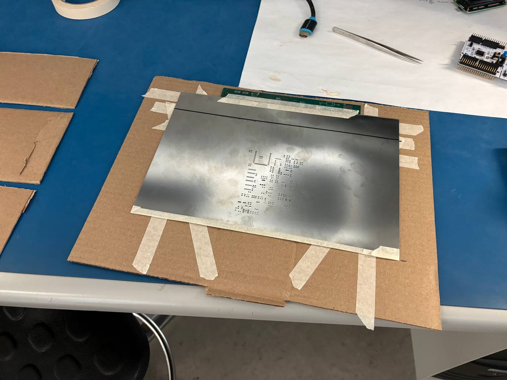
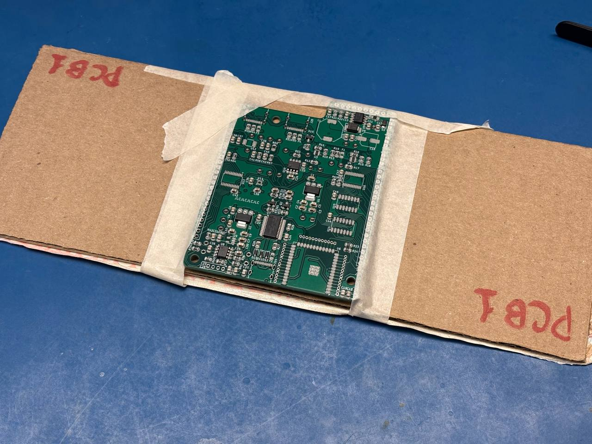
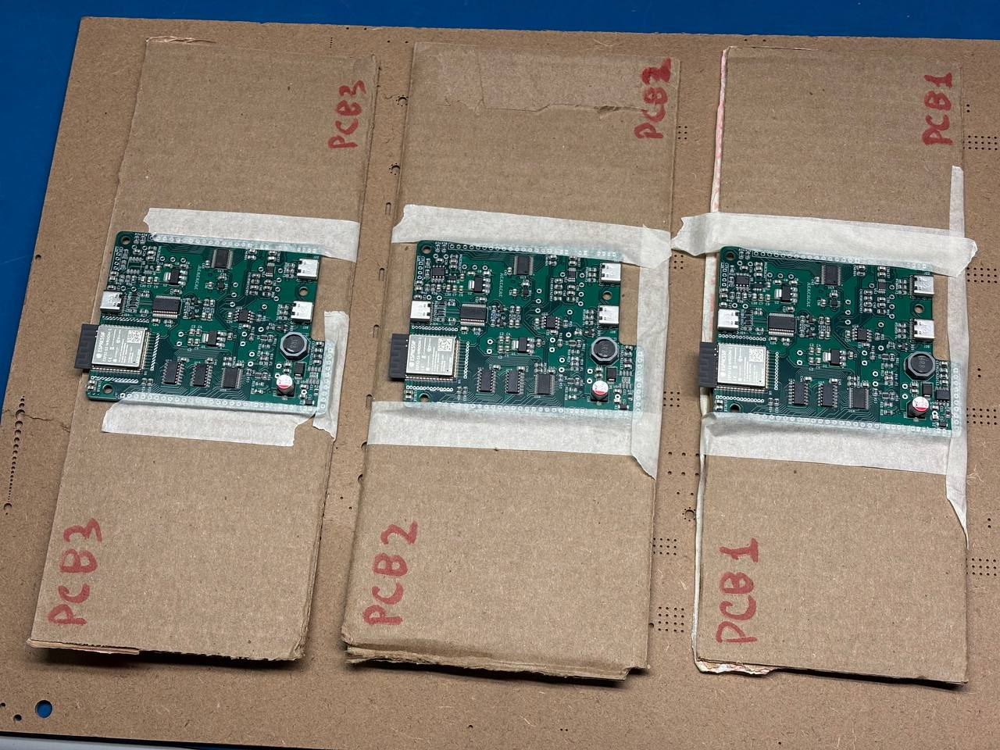
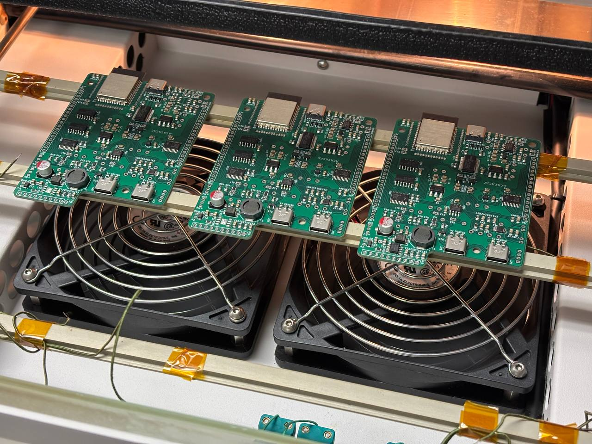

PCB Assembly Assistance
Today, I assisted Matvey Regentov
with assembling three Service PCBs in the Car Controller configuration. We needed to complete
the top-side component population and reflow while we had access to the laboratory reflow oven.
The boards included several small and difficult packages, such as the BMA400
accelerometer and the TPS2117DRLR power OR-ing ICs, so the population process needed
to be organized carefully.
Collaborative Population Workflow
Matvey developed a shared population procedure and spreadsheet checklist, and I helped carry out the process. We labelled the DigiKey bags with easy-to-read numbers and worked through the components in groups, beginning with passive components and then continuing to small semiconductors, larger ICs, and the largest parts. For every selected bag, I entered my initials in the checklist, placed the listed reference designators on the current PCB, and marked the corresponding row as complete.
Each PCB was taped to a labelled cardboard base so that it could be moved between our workstations without flexing the board. When passing a populated board, we warned each other before moving it to reduce the chance of disturbing components that were resting on the solder paste. Working in parallel allowed us to populate all three boards in approximately three hours. The completed checklist records the component assignments and process timestamps.[1]
Protecting Loose Components
Because the laboratory air conditioning was not working well, we had been using a portable fan near the work area. I warned that the airflow could blow small components off the boards before reflow, especially while they were only being held in place by solder paste. We therefore removed the fan from the assembly area before continuing the population process.
Assembly Images
I also took pictures during the assembly process. However, MR's images had better clarity and overall quality, so a small selection of his photographs is reused below instead of my versions.[2]




Results and Observations
The reflow process was generally successful, although several pins required cleanup after reflow.
During population, we also found that one load-cell component group was missing from PCB 3, only
one of the three ordered LMR14050 regulators had been shipped, the selected 1812 fuses
did not match the existing 0805 footprints, and two CAN USB-C connector labels were absent from
the silkscreen. These findings were recorded so that the remaining manual assembly and future PCB
revisions could address them.[2]
Thoughts on a Live Website Feature
I also began looking into adding a WebSocket-based live-update feature to the website. JavaScript could query the current elevator state from the database and move the on-page elevator graphic automatically, without requiring the user to refresh the page.